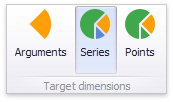
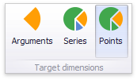

Master Filtering
The Dashboard allows you to use any data aware dashboard item as a filter for other dashboard items (Master Filter). To learn more about filtering concepts common to all dashboard items, see the Master Filtering topic.
The Pie dashboard item supports filtering by argument or series values.
Filtering by Arguments
When filtering by arguments is enabled, you can click a pie segment to make other dashboard items only display data related to the selected argument value.

To enable filtering by arguments in the Designer, set the required Master Filter mode and click the Arguments button in the Data Ribbon tab (or the  button if you are using the toolbar menu).
button if you are using the toolbar menu).

Filtering by Series
When filtering by series is enabled, you can click a pie to make other dashboard items display only data related to the selected pie.

To enable filtering by series in the Designer, set the required Master Filter mode and click the Series button in the Data Ribbon tab (or the  button if you are using the toolbar menu).
button if you are using the toolbar menu).

Filtering by Points
When filtering by points is enabled, you can click a single pie segment to make other dashboard items display only data related to the selected segment.

To enable filtering by points in the Designer, set the required Master Filter mode and click the Points button in the Data Ribbon tab.

Reset Filtering
To reset filtering, use the Clear Master Filter button (the  icon) in the caption area of the Pie dashboard item, or the Clear Master Filter command in the Pie's context menu.
icon) in the caption area of the Pie dashboard item, or the Clear Master Filter command in the Pie's context menu.